Entrepreneurial Strengths Health Scan
An interactive assessment that qualifies leads while it serves them.
View liveBuilt with AI
Custom apps. Content engines. Assessments, sales systems, and automations that give whole days back. All built by me, with AI, for real businesses. Mine included.
AI is the tool. Psychology is the method. You are the blueprint.
01. Lead Generation
The psychology People do not trade an email for a brochure. They trade it for self-knowledge.
An interactive assessment that qualifies leads while it serves them.
View liveA psychology-backed self-assessment that shows people where their energy actually goes.
View liveA signature brand voice tool. Deep identity questions in, a complete brand voice foundation out.
View liveA curated, categorized library of vetted AI tools.
View live02. Sales
The psychology Buying is a trust decision before it is a money decision. Clarity earns trust faster than persuasion.
Call notes in. A branded live proposal with a payment button out, the same day.
A smart application that qualifies before it books.
View liveInteractive service menus with favorites and proposal requests built in.
03. Delivery
The psychology The peak-end rule: clients remember the best moment and the last one. These builds design both on purpose.
A fully interactive workshop workbook. Not a PDF. An experience.
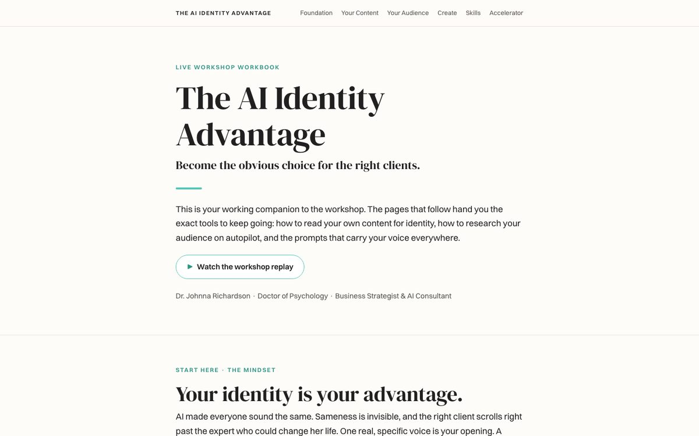
Client access only.
Structured feedback that clients actually complete.
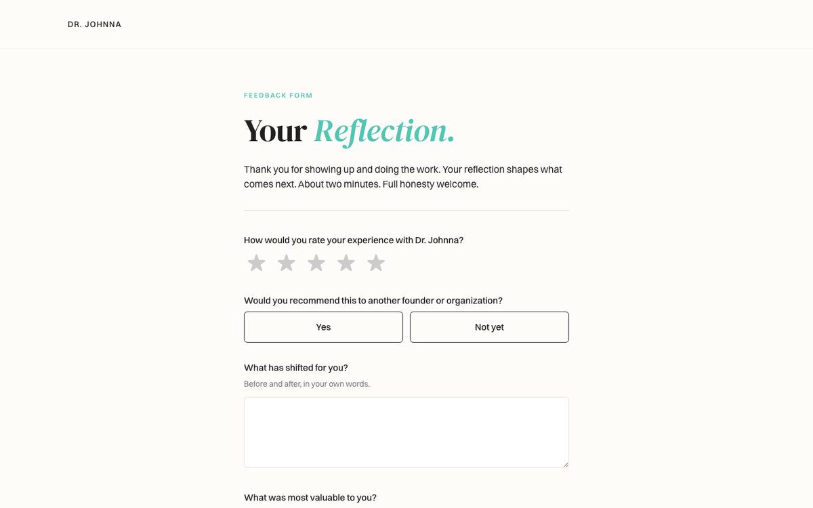
View liveProjects, files, and shared notes in one signed-in space, updated in real time.
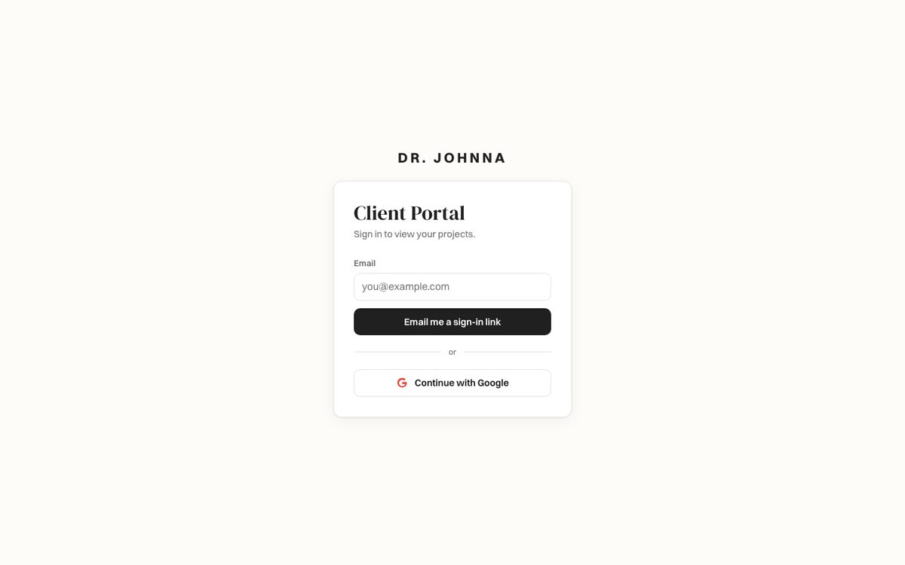
Client access only.
04. Content
The psychology A steady voice reads as credibility. People trust what sounds the same every time they meet it.
A topic in. Finished, on-brand carousel slides out, rendered automatically and ready to post.
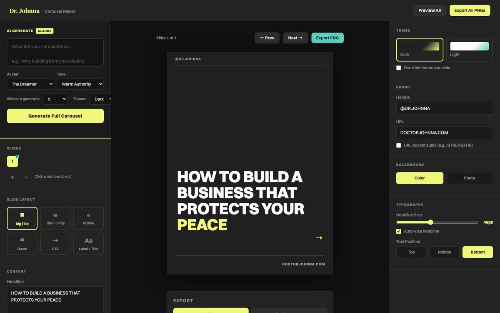
Free demo available upon request.
A research digest with a complete publishing pipeline behind it. See the full system in Systems.
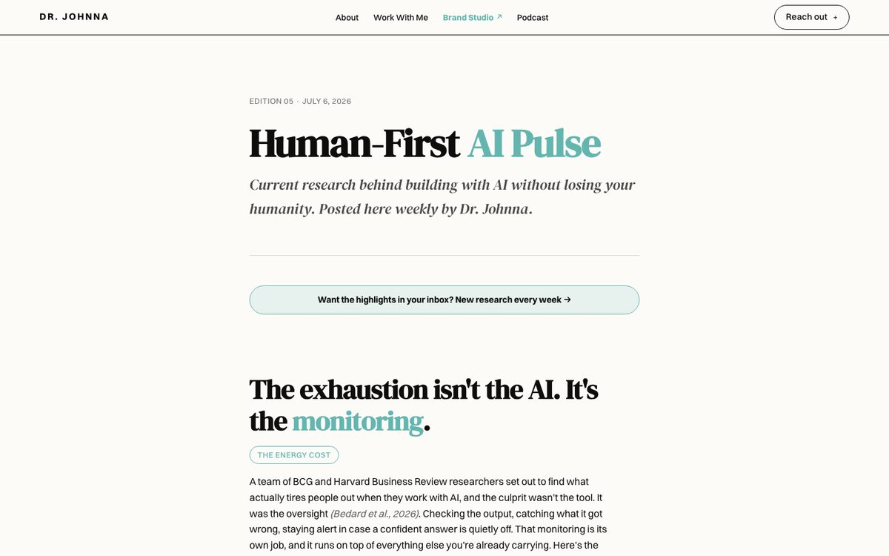
Read the latest issueOne piece of teaching becomes a week of platform content, every piece in my voice. A layered skill inside the Identity Content System, directed by its orchestrator.
05. Operations
The psychology Decision fatigue is real. Every small task you hand off returns attention to the work that earns.
Guests, topics, and episodes in one live workspace.
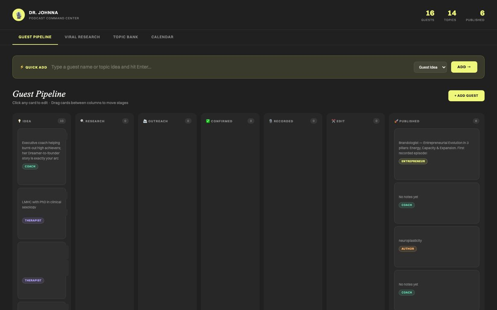
Thirty days of calendar data, turned into an honest picture of where the time went.
Bill a client in a sentence. A compliant, branded PDF comes out.
Podcast guest requests, client intake, structured feedback. Small builds that remove whole categories of email.
06. Custom Apps
The psychology A tool gets used when it matches how you already think. Fit beats features.
A personal training app built around one person's real routine.
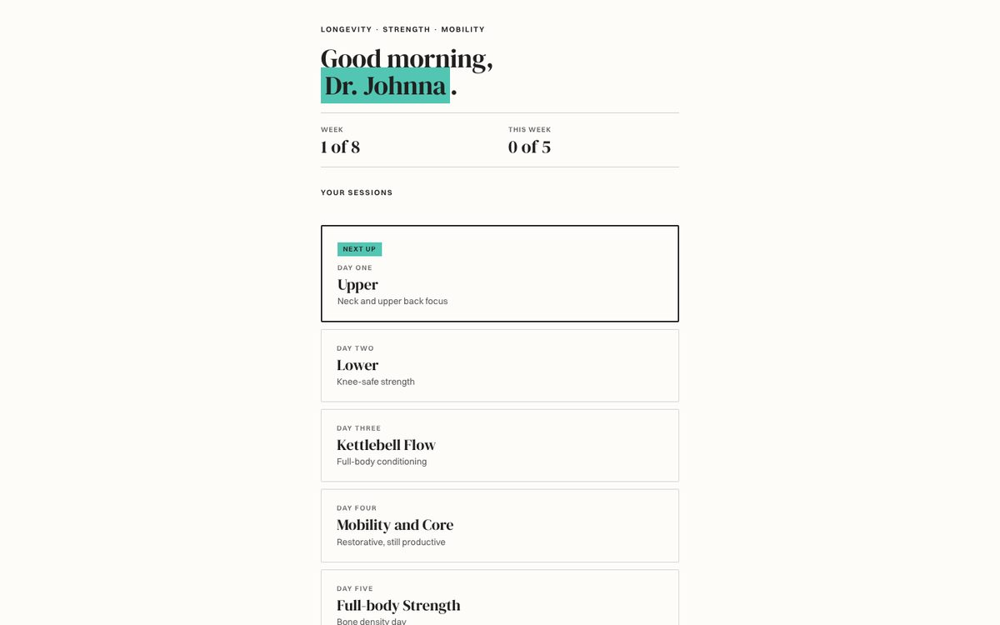
Try it liveConditions, spots, and trip logging for the Florida Keys.
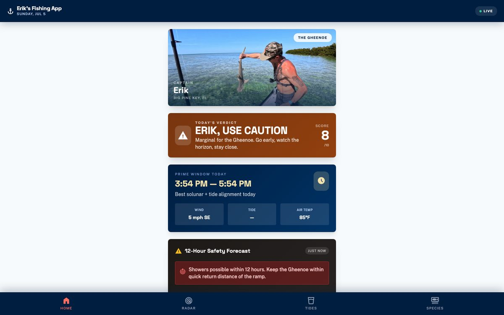
Try it liveAn AI coaching bot trained on my Gold Offer framework, walking entrepreneurs through their signature offer.
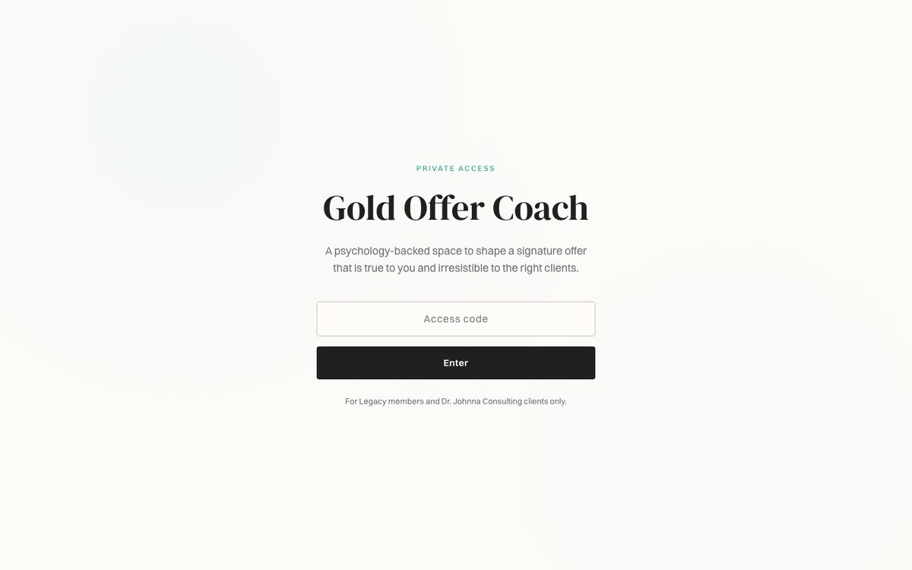
Client access only.
07. Websites
The psychology Visitors judge credibility in seconds, mostly by feel. Design is the first conversation.
Not a template with a name swap. Brand identity, full site design, deployment, shipped end to end.
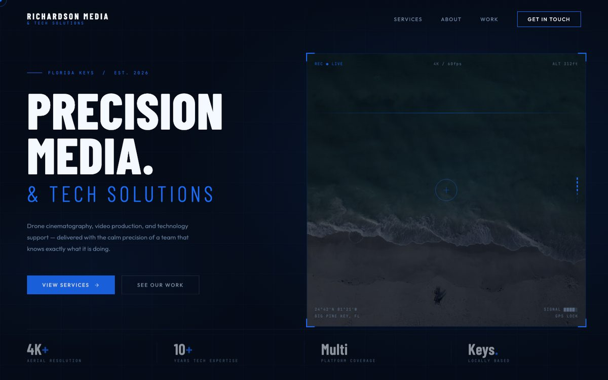
View liveA complete niche education and affiliate site.
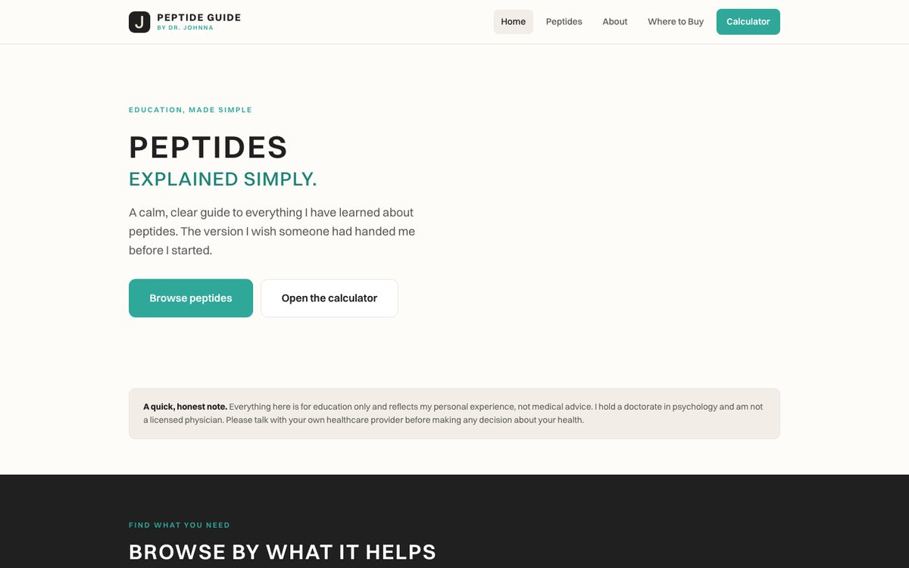
View liveA brand and full website for a peptide product and service company.
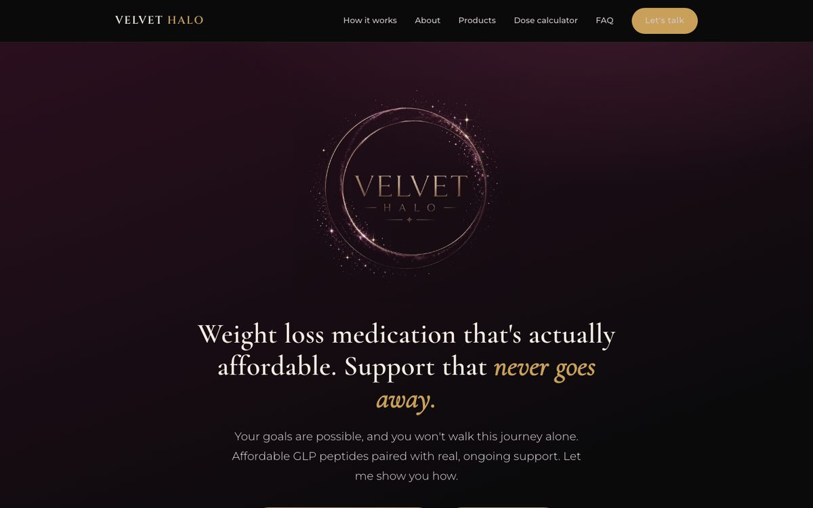
View liveIn the works.
08. Automations
The psychology Motivation runs out. Structure does not. Automation is structure.
If it belongs in your business and it repeats, it can be automated.
Designed by me. Delivered with my development team when the build calls for it.
09. Systems
The psychology Growth quietly raises cognitive load until the owner becomes the bottleneck. Architecture gives the attention back.
A content engine built as layered skills, directed by an orchestrator.
Brand voice at the foundation. Specialized skills for every content type. One orchestrator coordinating all of it. Every piece sounds like me because it was built from my identity first. This is the Multiply stage of my A.I.M. Framework, live in my own business.
One recording becomes two weeks of content.
The old way: one episode, then six hours of show notes, captions, social drafts, scheduling, and filing.
My hands touch it twice. Recording and approving.
A research desk that runs daily and publishes weekly.
The old way: hours of reading, a folder of saved links, and nothing ever published.
An automated agent researches every morning, guided by a profile of exactly who I serve. One rule cannot be overridden: no real source, no publish.
Research runs every day. I show up once a week and approve.
Lead capture through relationship building, with no hands on the wheel.
Leads arrive named, qualified, and already in relationship.
10. The Difference
I do not hand you a stack of tools and wish you luck. I start with who you are: how you think, how you work best, what actually drains you. Then we build only what fits.
AI amplifies what you give it. My job is making sure what you give it is really you.
Whether you need one tool that removes a weekly headache or a system that runs a whole operation, the first step is the same. A conversation about your business and what alignment looks like for you.
Want to see any of these builds in action? Reach out and I'll give you a live demo.
Book a conversation